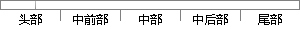

第一章 绪论 简述了本作品的研究意义和目的，同时结合行业背景对相关产业进行分析。
片段位置图

相似结果|
相似片段 1：。第一章绪论，介绍论文研究背景、意义、对象及方法；第二章文献综述，对国内外相关理论进行综述；第三章软件行业R公司激励现状现状调查，简述中国软件行业发展及用人要求，同时对R公司目前现激励状进行调查分析
相似片段 2：本研究拟分为五章，第一章为绪论，简述目前文化创意产业研究和发展背景，从而引出本研究的意义、目的、研究内容和结构安排，并对文化创意产业研究和绩效评价相关理论进行文献综述。第二章作为相关理论概述，主要
相似片段 3：本文共分六章，第一章绪论简单介绍强化木地板产业及汇丽公司现状，并指出本文的研究意义及研究的理论方法和框架；第二章介绍竞争战略的相关理论；第三章分析了汇丽公司竞争现状及存在的问题；第四章进行行业及产业
|
※ 片段修改建议 ※
近似词参考：- 研究：钻研
- 目的：目标
- 结合：连系 联合
- 背景：布景 后台 靠山 配景
- 相关：相干
- 产业：财产 工业 家产 家当
- 进行：举行
- 分析：阐发 阐明 剖析
系统自动生成语句： 第一章 绪论 简述了本作品的钻研意义和目标，同时连系行业布景对相干财产举行阐发。
注：本片段修改建议为系统自动生成，仅供参考。